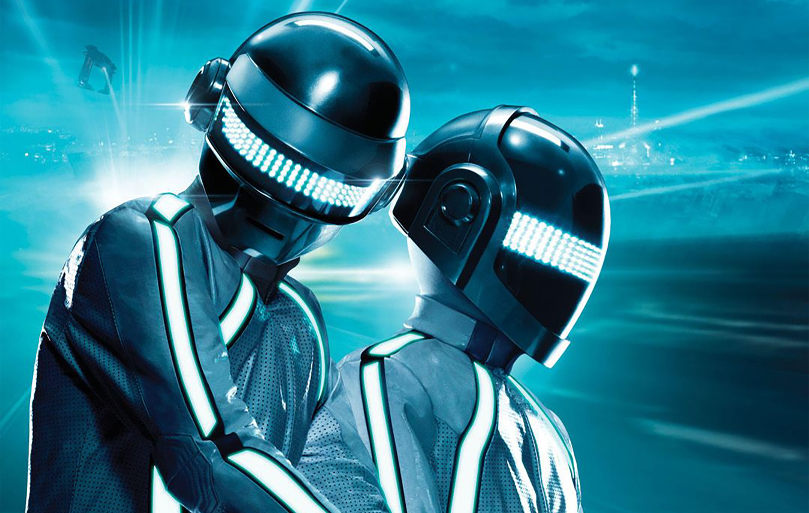

Greetings Programs!
Tron legacy is one of the best movies of all time!I'm sure most of you share that same opinion,
hence why you are here. Tron isn't just a movie, but a way of thinking.It makes you feel like, you are really
apart of this digital world! While we wait for Tron 3 to release, here is all the info you need to catch up on!

Daft Punk
Daft Punk is the artists behind the EDM(Electronic Dance Music) music we all have come to love.
They have been a known artist since the early 1990's, and since then have become icons! To most
Daft Punk made Tron Legacy The icon that it really was. Although the movie didn't break the box office those who liked it, loved it!
Daft Punk made this happen by their riveting score like Son Of Flynn as well as End Of Line.
Without Daft Punk In Tron Legacy it wouldn't be nearly as loved by fans if loved at all.
The score was that good! Since then they have retired, but have been rumored to have a final score
in the upcoming Tron 3 film.You can learn more about this Here in the rumors page.
Story Summary
Tron Legacy follows the young son of the infamous Kevin flynn. His father goes missing, so his son starts lossing hopes on
him ever popping up again. Out of the blue his old fathers friend Alan gets a page from his fathers office. Kevins son Sam
goes to check it out, but in looking finds a secret pasage way that leads to his fathers old work underneath the arcade.
Sam while entering authorization codes ends up being put onto the grid. This could be compared to the young Kevin flynn
in the first Tron back in 1982. He then goes though hoops against the rogue program CLU to get his father through a soon closing portal.
whilst this is happening we see the program Tron once more who has been re-purposed by CLU to know be known as a rogue program called Rinzler.
While Sam Was being challenged by CLU to the grid he meets a ISO called Quorra who aids him to find his father. The rest of the movie is a chase
to beat CLU to the portal with Kevin flynn's special ID disk that allows the wielder to leave if having it within their hands.

Where Tron 3 could take things
Tron 3 could start off right where Tron Legacy ends. After the sunset ride with Sam, and Quorra Tron makes
it out of the Sea of Simulation. In the last movie as we saw him plumit in the sea we saw his colors change from orange to blue.
indicating all the coruption has left, and he has returned back to the old tron.They could also bring Kevin flynn back, and or CLU.
You just can't have a Tron movies anymore without the legend himself Kevin Flynn (Jeff Bridges) in some capacity. The way the world of Tron
works is based off real world programing as well as computer physics, and ideas. So using this knowledge Kevin flynn could be in the metaphorical
recycling bin. Or he could just be hanging out in the cloud because as we have all come to know nothing deleted on the internet is truly gone.
If you want to here more about what could be coming from this movie click on this link Here.
What to expect?
You can definatly expect roads running on ribbons of light as well as disk battle arena's. I wouldn't expect to see Kevin Flynn again, but it would be a
warm suprise if he was to return. I also wouldn't expect Tron's return as Bruce Boxleitner was having issues with Disney's time and time again rejection of
the Tron franchise. I would definatly expect to see Quorra as well as Sam Flynn again. To end this section off expect to see battle's against other rogue programs still wondering the grid
as shown possible within the short Tron Uprising series, and a wordly score with battles.

{kind=link}
{kind=link}